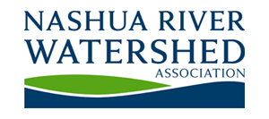
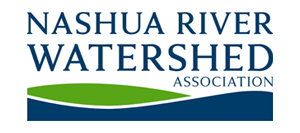

River Classroom®
 

River Classroom® is the expedition-based, environmental canoeing program offered by the Nashua River Watershed Association in partnership with Nashoba Paddler.
Groups of students utilize canoes to study the Nashua and Squannacook Rivers led by trained canoeing guide/ naturalists. The Nashua has a rich history of cultural changes and ecological restoration. It is a nationally acclaimed model of successful environmental activism. Many schools have found it to be a tremendous educational resource and a wonderful laboratory for water/river studies/watershed programs.
To schedule a River Classroom trip or for more information, contact:
Stacey Chilcoat, River Classroom Director
StaceyC@NashuaRiverWatershed.org
Nashua River Watershed Association
592 Main Street
Groton, MA 01450
978-448-0299
398 West Main Street, Groton, MA | (978) 448-8699
Mailing Address: PO Box 228, West Groton, MA 01472
All rights reserved, Nashoba Paddler, LLC 2018 ©